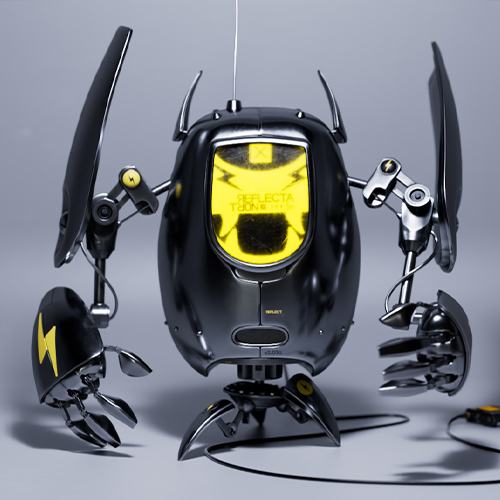
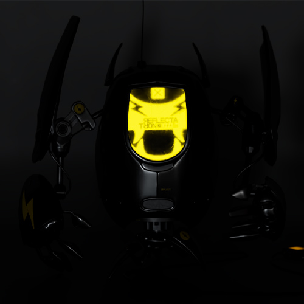
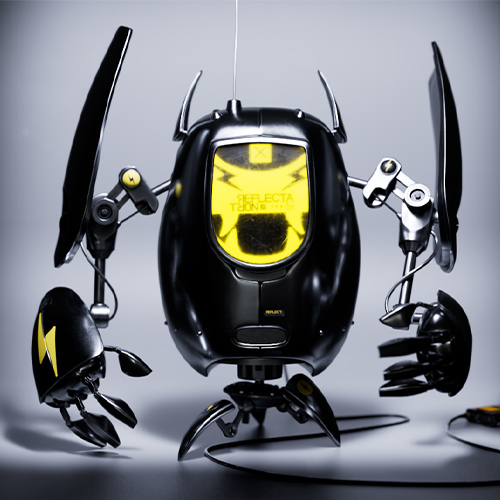
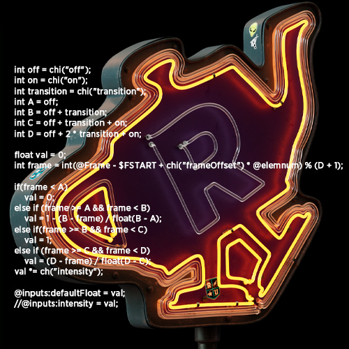
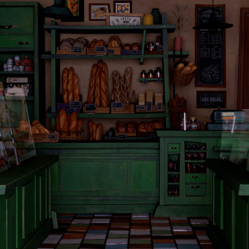
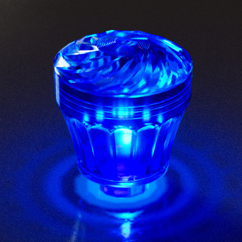
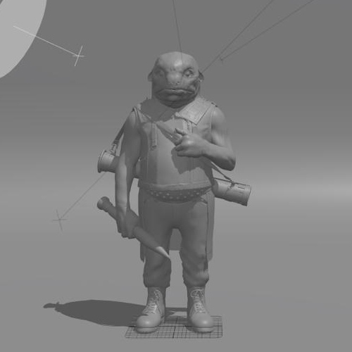

Start Here（从这里开始）准备好进一步学习灯光了吗？很好……开始吧！ The 3 Light Types（三种灯光类型）RenderMan 主要灯光类型的介绍 灯光基础课程（Lighting Fundamentals）如果你刚接触灯光，这里是很好的起点。 What Light When?（何时使用哪种灯光？）关于何时使用合适灯光类型的实用指南。 下一步 LightFilters（灯光过滤器）学习 Pixar 的秘密灯光技巧！ Neons（霓虹灯）学习如何在 Solaris 中设置 Mesh Lights。 Flashy Neons（闪亮霓虹灯）让我们用一些 VEX 代码让霓虹灯活起来！ 灯光链接技术（Light Linking） Controlling Shadows（控制阴影） 进一步学习 French Bakery Lighting（法式面包店灯光）深入了解 French Bakery 项目中的灯光。 灯泡布光课程（Lighting Light Bulbs）学习 RenderMan Demo Sign 中灯泡的创建方式。 Portrait Lighting（肖像灯光）下载 The Smoking Gnome 项目，并学习其灯光设置。 Character Lighting Tips（角色灯光提示）来自客座艺术家的一系列灯光提示